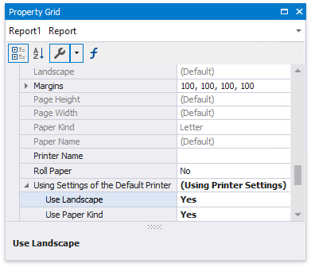
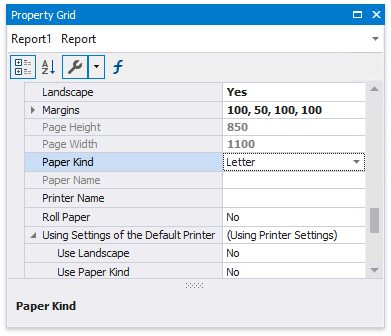

Change a Report's Page Settings
In the Report Designer, page settings of a report can be specified in one of two ways. The first approach forces the default printer settings to be used when the report is printed, while the other one enables you to alter page settings independently.
Use Settings of the Default Printer
For the orientation and paper size, you can specify a requirement that applies the corresponding printer settings instead of the report's. In this instance, the page properties in the Property Grid are disabled and displayed as grayed out. This may be useful when the report is printed in several places with different printers and printer settings.

Specify the Report's Page Settings
While designing the report, you can specify the report's page settings in the Property Grid's Miscellaneous tab:

You can set the page orientation and modify the margins. The margin values are expressed in the report's measurement units. You can select from the predefined paper sizes (Paper Kind property), choose Custom and create your own paper size, or select one which is already defined for this printer (Paper Name property).
These settings affect the layout of the report's design surface. After their modification, you may notice red warning marks, indicating that the controls go beyond the page width. These warnings can be switched off by setting the Show Printing Warnings property of the report to No.

You can also modify the page settings in Print Preview using the Page Setup dialog.